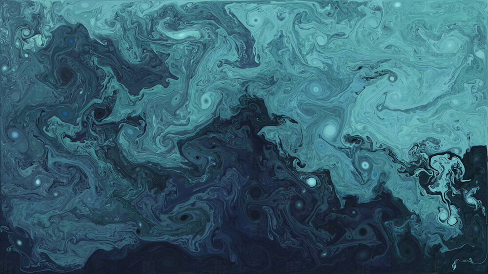
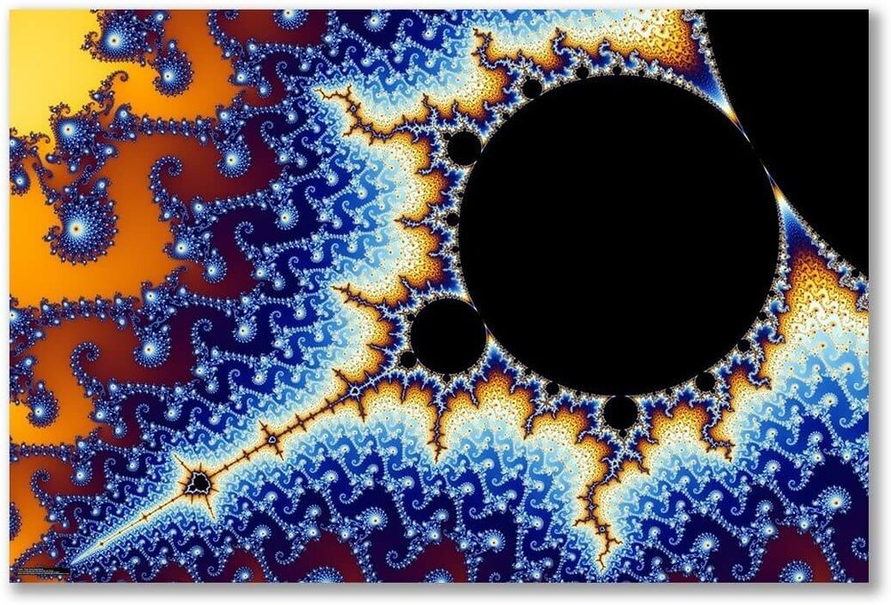
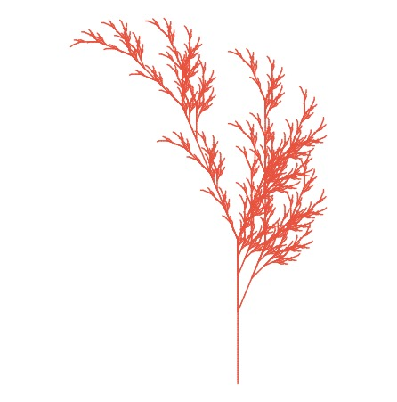
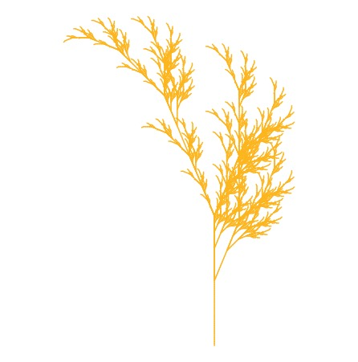
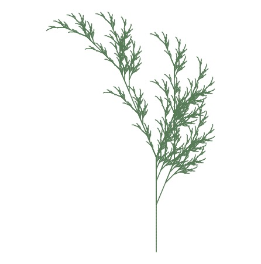

Assignment 1
Some Examples of Generative Art
Generative art is a form of digital art that is generated using autonomous machines or algorithms. It is sometimes also referred to as Coding Art, Interactive Art or Generative Design. Here are a few examples:
In the picture above Hansmeyer takes the most primitive forms, the platonic solids, and repeatedly employs one single operation — the division of a form’s faces into smaller faces — until a new form is produced.

This piece is Stock’s reflection on the hierarchy of currents and eddies in the ocean, and their little-understood effect on global climate change. It is a 42”x28” digital archival inkjet print on canvas (2012).

The picture above uses a mathematical formula that has stunning aesthetic properties when visualized. It expresses repeating patterns at all levels of scale – no matter how much you zoom in or out, you can find the same exact geometric patterns repeating over and over – so it is considered a fractal.
Source: Generative Art Guide
Using “Fall.R” to Generate Art
Here are a few examples of generative art that were created using “Fall.R”. I tried different colors:



Analysis of Graph
The following graph was taken from the article “Risk of COVID-19 Exposure Still a Concern for U.S. Employees”. The graph is too cluttered and tries to show a lot of information at once. It would be useful to break up the single graphic into multiple. Additionally, some other categories may also be useful to explore; for example: instead of having categories like “men” and “democrats” - it might be useful to look at Democrats who are men versus democrats who are women. The color scheme for the graph could also be more indicative of the information it represents. The employees who are least concerned about COVID-19 are colored in the brightest green. Having a vertical bar graph might also help the viewer distinguish the differences between values better.